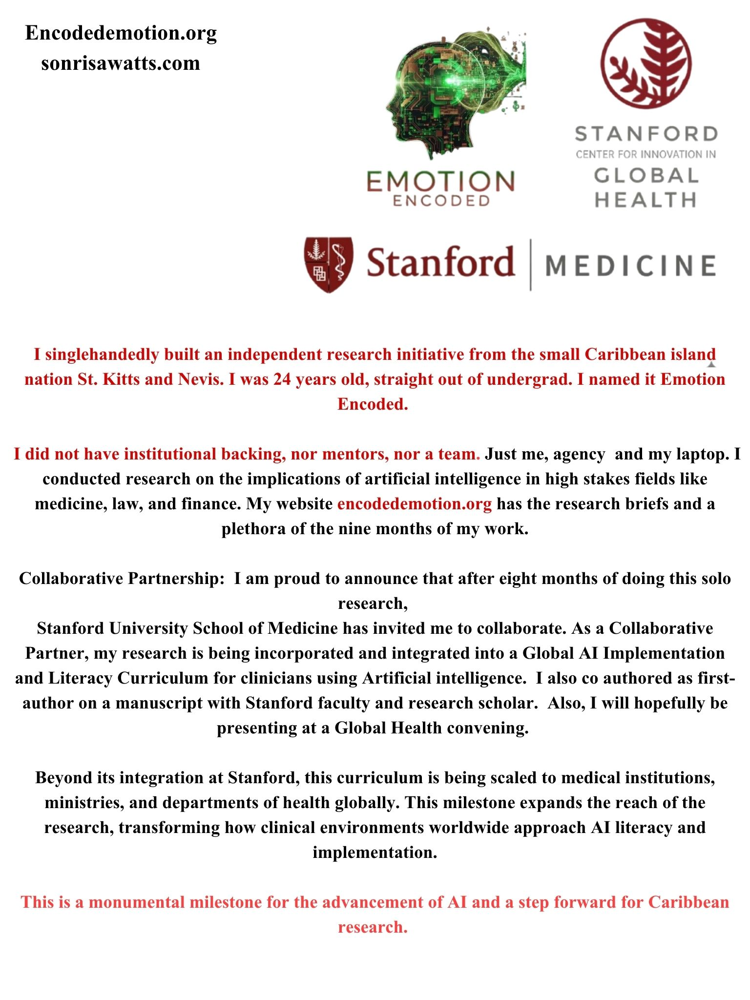

GLOBAL BENCHMARK & CURRICULUM INTEGRATION
EMOTION ENCODED X STANFORD SCHOOL OF MEDICINE COLLABORATION
Accomplishments: Emotion Encoded x Stanford School of Medicine Collaboration
01 / CURRICULUM PARTNERSHIP
I founded Emotion Encoded as a solo project, 24 years old, right after graduating from BSc. 8 months later, I'm proud to announce: Stanford University School of Medicine invited me to be a collaborating partner and has requested my research to be in a Global Open-access Implementation and Literacy curriculum for Clinicians using Artificial Intelligence. Beyond its integration at Stanford, this curriculum is being scaled to medical institutions, ministries, and departments of health globally. This milestone expands the reach of the research, transforming how clinical environments worldwide approach AI literacy and implementation. 🙏🏾💯
02 / ACADEMIC MANUSCRIPT
I am the first author of a manuscript with Stanford faculty on the implications of artificial intelligence in high stakes fields on Caribbean professionals, which is in prep.
Stanford University - School of Medicine | Global Health Innovation
Research Collaborative Partnership & Co-Author
March 2026 – Present
- Invited by Stanford School of Medicine to incorporate Emotion Encoded’s proprietary Caribbean physician insights into Stanford’s Global AI Literacy and Implementation Open-access Curriculum for clinicians using AI, having been formally requested by faculty.
- Collaborative Partnership: Facilitating the institutional integration and adoption of findings into curriculum to establish a permanent case study for AI implementation.
- Provided localized qualitative datasets and thematic analyses to architect frameworks for calibrating human-AI trust among medical specialists, translating regional data into scalable insights for clinical automation and global health delivery within resource-constrained environments.
- Formulated the international distribution framework and scaling the curriculum directly to global medical faculties, universities, ministries, and departments of health.
- Co-authoring a first-author peer-reviewed manuscript with Stanford Faculty on Caribbean physician perspectives on clinical AI trust.

